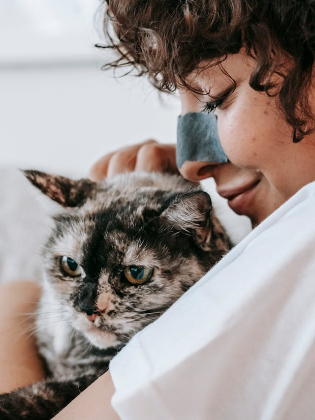

Os gatos são criaturas encantadoras e misteriosas, com olhos que brilham como estrelas e movimentos graciosos que lembram uma dança. Eles trazem alegria e conforto aos lares, ronronando suavemente enquanto se aninham ao nosso lado. Com sua curiosidade infinita e espírito independente, os gatos nos ensinam a apreciar os pequenos momentos da vida e a encontrar beleza na simplicidade. 🐾💖

Melhores Companhias !
Sim, os gatos são excelentes companhias! Eles têm uma maneira única de trazer conforto e alegria aos seus donos. Com seus ronronados suaves e presença tranquila, os gatos podem ajudar a reduzir o estresse e a ansiedade. Além disso, eles são independentes, o que significa que não exigem atenção constante, mas ainda assim gostam de estar perto de seus humanos, especialmente quando precisam de carinho.
Os gatos também são conhecidos por suas personalidades distintas e curiosidade natural, o que pode tornar cada dia uma nova aventura. Eles são ótimos para quem aprecia momentos de tranquilidade e também para aqueles que gostam de brincar e interagir com seus animais de estimação.
Você tem um gato ou está pensando em adotar um? 🐱💖